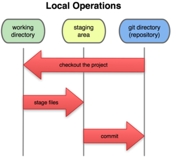

Version control is used to keep track of the changes made on a set of files over time (commonly known as "revisions" or "commits"). This is useful for recovering from accidentally deleted or broken code and for collaborative coding in a team. Git is a popular modern version control system that is used by many free and open source software projects, as well as numerous tech. companies.
Each Git repository consists of a .git folder
and the working directory.
The .git folder contains a representation of
the version history and
is usually located inside the working directory.
The working directory contains the currently "checked-out" commit;
a staging area (also called the "index") where you collect changes
in preparation for creating a commit;
and a tree of commits, each of which represents
a set of related changes to the project.
Each "change" (or commit) consists of a user-entered message describing the changes that were made, a representation of the changes themselves, and a pointer to the previous commit(s). In this way, Git creates a tree of commits that shows the evolution of a project over time.

The working directory, staging area, and tree of commits.
(Image credit: Pro Git by Scott Chacon)
Git is a distributed version control system, which means that every developer's machine contains a complete copy of the repository; thus, the entire history of the codebase is always stored locally. This is in contrast to many older such sytems that only stored this information on one centralized server.
There are many online services that offer Git repository hosting, the most popular being GitHub and BitBucket. For the sake of simplicity, the CS department recommends that you store your code on department systems. If, however, you decide to use a third-party service, carefully ensure that your hosted repositories are private! If you publish course code to a public repository, you can be penalized for cheating pursuant to RIT's Academic Integrity Policy and the department Policy on Academic Honesty.
Now that you have a general idea of what Git is and what it can do, let's learn how to use it!
Note: it is good practice to keep your files for each lab/project/hw assignment in its own distinct subdirectory of the appropriate course directory. This is wise for both organizational and version control-related reasons, as you will see.